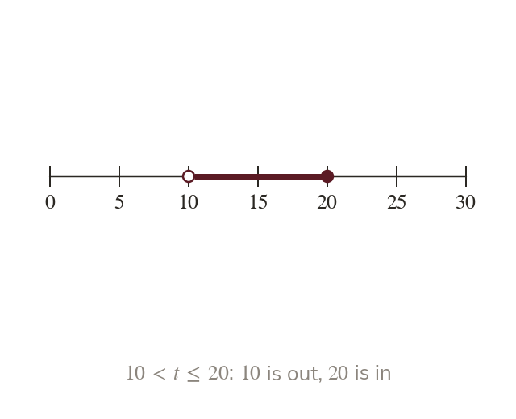

Classes with no gaps
Continuous data can take any value. So classes are inequalities:
No gaps: every value falls in exactly one class.
Continuous data can take any value, so its classes are written as inequalities such as
The boundaries leave no gaps, so every value falls into exactly one class.
The boundaries leave no gaps, so every value falls into exactly one class.